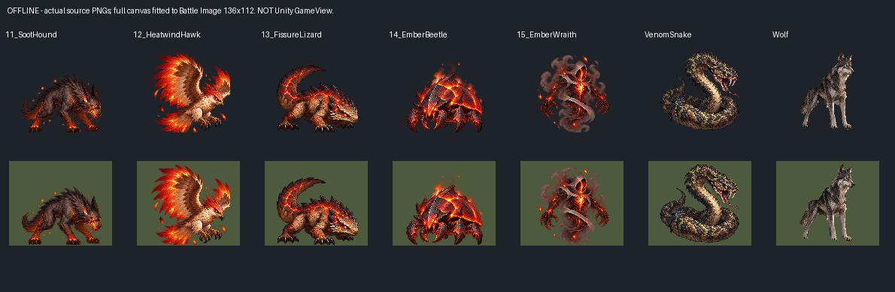
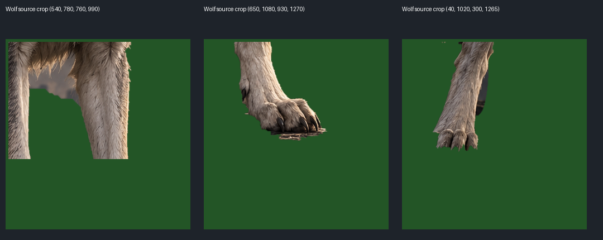
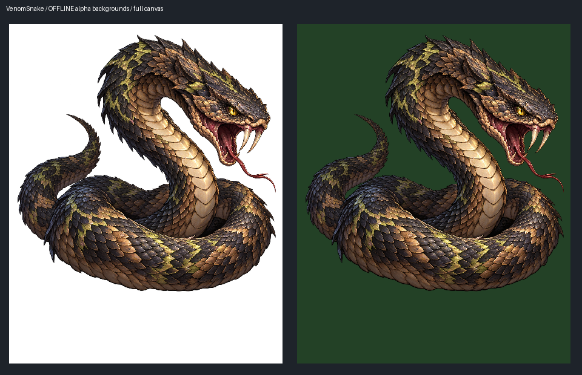
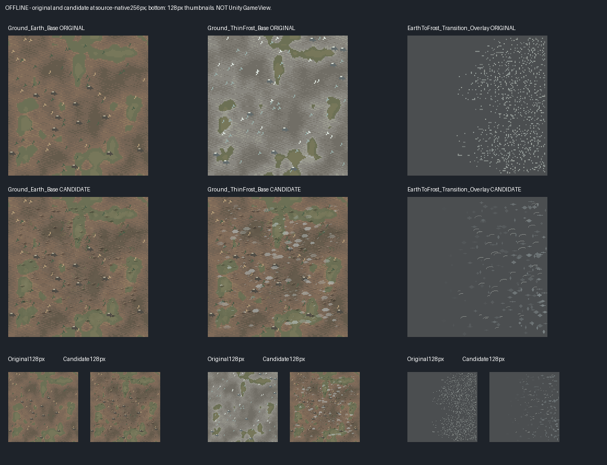
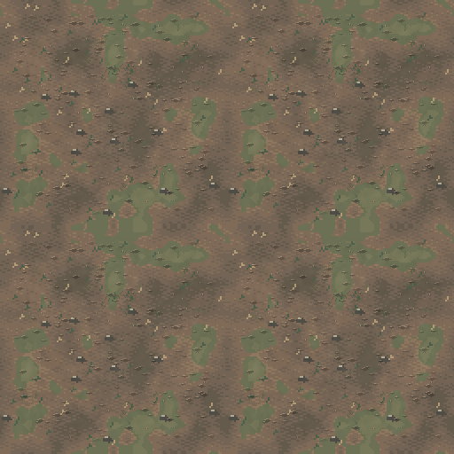
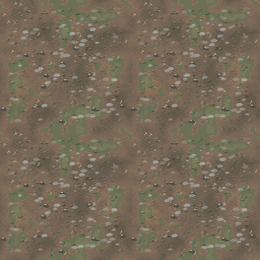
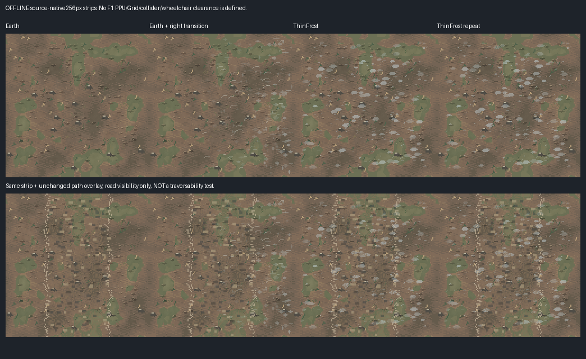
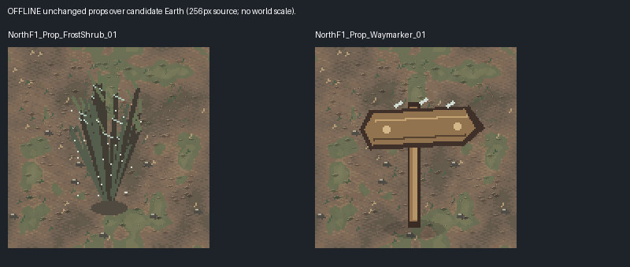
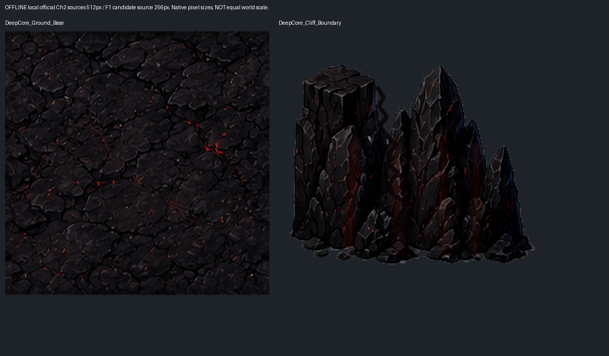

Local official Chapter2 PNGs are used. Full source canvas fits actual Battle Image136x112. Candidate PPU remains undefined. F1 1:1 source pixels and repeat composites do not prove camera scale or wheelchair clearance.
Monster_ActualBattleSlot_Offline.png

Wolf_Matte_Locations.png

VenomSnake_AlphaBackgrounds.png

F1_Original_Candidate_1to1_Offline.png

Ground_Earth_Base_Repeat2x2_1to1.png

Ground_ThinFrost_Base_Repeat2x2_1to1.png

F1_Transition_Path_Offline.png

F1_Unchanged_Props_Offline.png

Ch2_Official_Environment_NativePixels.png
